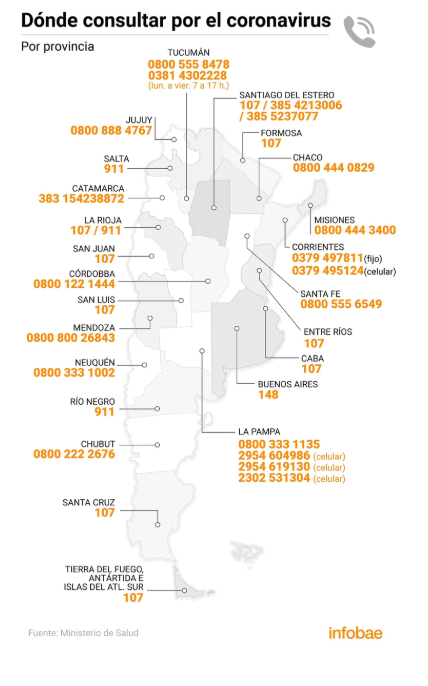

El Ministerio de Salud de la Nación y las provincias habilitaron líneas teléfonicas para hacer consultas específicas sobre el coronavirus. El protocolo actual indica que es recomendable llamar por teléfono y no acudir a las guardias para evitar la propagación del virus.
Los teléfonos para hacer consultas por el coronavirus son:
- Desde todo el país: 0800-222-1002 (opción 1)

- Provincia de Buenos Aires: 148
- Ciudad de Buenos Aires: 107 / 11 5050 0147 (WhatsApp)
- Catamarca: 383 154238872
- Chaco: 0800 444 0829
- Chubut: 0800 222 2676
- Córdoba: 0800 122 1444
- Corrientes: 0379 4974811 (fijo)/ 379 4895124 (celular)
- Entre Ríos: 107
- Formosa: 107
- Jujuy: 0800 888 4767
- La Pampa: 0800 333 1135 / 2954 604986 (celular) / 2954 619130 (celular) / 2302 531304 (celular)
- La Rioja: 107 / 911
- Mendoza: 0800 800 26843
- Misiones: 0800 444 3400
- Neuquén: 0800 333 1002
- Río Negro: 911
- Salta: 911
- San Luis: 107
- San Juan: 1073
- Santa Cruz: 107
- Santa Fe: 0800 555 6549
- Santiago del Estero: 107 / 385 4213006 / 385 5237077
- Tierra del Fuego, Antártida e Islas del Atlántico Sur: 107
- Tucumán: 0800 555 8478 / 0381 4302228 (lunes a viernes 7 a 17 horas)
- Teléfono para para denunciar violaciones a la cuarentena: 134
- Asistencia para los argentinos en el exterior: +5491162717291 / +5491144113057
- Videollamadas para personas sordas e hipoacúsicas: 11 5728 4011 (lunes a viernes de 10 a 15)